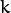
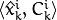
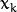

Common Interfaces of TrackerModel
ConfidenceMap
Represents the model of the target at frame  (all states and scores)
[AAM] The set of the pair 
-
ConfidenceMap
ConfidenceMap:
typedef std::vector<std::pair<Ptr<TrackerTargetState>, float> > ConfidenceMap;
Trajectory
Represents the estimate states for all frames
[AAM]  is the trajectory of the target up to time
-
Trajectory
Trajectory:
typedef std::vector<Ptr<TrackerTargetState> > Trajectory;
TrackerTargetState
Abstract base class for TrackerTargetState that represents a possible state of the target.
[AAM]  all the states candidates.
all the states candidates.
Inherits this class with your Target state
-
class TrackerTargetState
TrackerTargetState class:
class CV_EXPORTS_W TrackerTargetState
{
public:
virtual ~TrackerTargetState(){};
Point2f getTargetPosition() const;
void setTargetPosition( const Point2f& position );
int getTargetWidth() const;
void setTargetWidth( int width );
int getTargetHeight() const;
void setTargetHeight( int height );
};
In own implementation you can add scale variation, width, height, orientation, etc.
TrackerStateEstimator
Abstract base class for TrackerStateEstimator that estimates the most likely target state.
[AAM] State estimator
[AMVOT] Statistical modeling (Fig. 3), Table III (generative) - IV (discriminative) - V (hybrid)
-
class TrackerStateEstimator
TrackerStateEstimator class:
class CV_EXPORTS_W TrackerStateEstimator
{
public:
virtual ~TrackerStateEstimator();
static Ptr<TrackerStateEstimator> create( const String& trackeStateEstimatorType );
Ptr<TrackerTargetState> estimate( const std::vector<ConfidenceMap>& confidenceMaps );
void update( std::vector<ConfidenceMap>& confidenceMaps );
String getClassName() const;
};
TrackerStateEstimator::create
Create TrackerStateEstimator by tracker state estimator type
-
C++: static Ptr<TrackerStateEstimator> TrackerStateEstimator::create(const String& trackeStateEstimatorType)
| Parameters: |
- trackeStateEstimatorType – The TrackerStateEstimator name
|
|---|
The modes available now:
- "BOOSTING" – Boosting-based discriminative appearance models. See [AMVOT] section 4.4
The modes available soon:
- "SVM" – SVM-based discriminative appearance models. See [AMVOT] section 4.5
TrackerStateEstimator::estimate
Estimate the most likely target state, return the estimated state
-
C++: Ptr<TrackerTargetState> TrackerStateEstimator::estimate(const std::vector<ConfidenceMap>& confidenceMaps)
| Parameters: |
- confidenceMaps – The overall appearance model as a list of ConfidenceMap
|
|---|
TrackerStateEstimator::update
Update the ConfidenceMap with the scores
-
C++: void TrackerStateEstimator::update(std::vector<ConfidenceMap>& confidenceMaps)
| Parameters: |
- confidenceMaps – The overall appearance model as a list of ConfidenceMap
|
|---|
TrackerStateEstimator::getClassName
Get the name of the specific TrackerStateEstimator
-
C++: String TrackerStateEstimator::getClassName() const
TrackerModel
Abstract class that represents the model of the target. It must be instantiated by specialized tracker
[AAM] Ak
Inherits this with your TrackerModel
-
class TrackerModel
TrackerModel class:
class CV_EXPORTS_W TrackerModel
{
public:
TrackerModel();
virtual ~TrackerModel();
void modelEstimation( const std::vector<Mat>& responses );
void modelUpdate();
bool runStateEstimator();
bool setTrackerStateEstimator( Ptr<TrackerStateEstimator> trackerStateEstimator );
void setLastTargetState( const Ptr<TrackerTargetState>& lastTargetState );
Ptr<TrackerTargetState> getLastTargetState() const;
const std::vector<ConfidenceMap>& getConfidenceMaps() const;
const ConfidenceMap& getLastConfidenceMap() const;
Ptr<TrackerStateEstimator> getTrackerStateEstimator() const;
};
TrackerModel::modelEstimation
Estimate the most likely target location
[AAM] ME, Model Estimation table I
-
C++: void TrackerModel::modelEstimation(const std::vector<Mat>& responses)
-
TrackerModel::modelUpdate
Update the model
[AAM] MU, Model Update table I
-
C++: void TrackerModel::modelUpdate()
TrackerModel::runStateEstimator
Run the TrackerStateEstimator, return true if is possible to estimate a new state, false otherwise
-
C++: bool TrackerModel::runStateEstimator()
TrackerModel::setTrackerStateEstimator
Set TrackerEstimator, return true if the tracker state estimator is added, false otherwise
-
C++: bool TrackerModel::setTrackerStateEstimator(Ptr<TrackerStateEstimator> trackerStateEstimator)
-
TrackerModel::setLastTargetState
Set the current TrackerTargetState in the Trajectory
-
C++: void TrackerModel::setLastTargetState(const Ptr<TrackerTargetState>& lastTargetState)
-
TrackerModel::getLastTargetState
Get the last TrackerTargetState from Trajectory
-
C++: Ptr<TrackerTargetState> TrackerModel::getLastTargetState() const
TrackerModel::getConfidenceMaps
Get the list of the ConfidenceMap
-
C++: const std::vector<ConfidenceMap>& TrackerModel::getConfidenceMaps() const
TrackerModel::getLastConfidenceMap
Get the last ConfidenceMap for the current frame
-
C++: const ConfidenceMap& TrackerModel::getLastConfidenceMap() const
TrackerModel::getTrackerStateEstimator
Get the TrackerStateEstimator
-
C++: Ptr<TrackerStateEstimator> TrackerModel::getTrackerStateEstimator() const
Specialized TrackerStateEstimator
In [AMVOT] Statistical modeling (Fig. 3), Table III (generative) - IV (discriminative) - V (hybrid) are described the most known statistical model.
At moment TrackerStateEstimatorMILBoosting and TrackerStateEstimatorAdaBoosting are implemented.
TrackerStateEstimatorMILBoosting : TrackerStateEstimator
TrackerStateEstimator based on Boosting
-
class TrackerStateEstimatorMILBoosting
TrackerStateEstimatorMILBoosting class:
class CV_EXPORTS_W TrackerStateEstimatorMILBoosting : public TrackerStateEstimator
{
public:
class TrackerMILTargetState : public TrackerTargetState
{
...
};
TrackerStateEstimatorMILBoosting( int nFeatures = 250 );
~TrackerStateEstimatorMILBoosting();
void setCurrentConfidenceMap( ConfidenceMap& confidenceMap );
};
TrackerMILTargetState : TrackerTargetState
Implementation of the target state for TrackerMILTargetState
-
class TrackerMILTargetState
TrackerMILTargetState class:
class TrackerMILTargetState : public TrackerTargetState
{
public:
TrackerMILTargetState( const Point2f& position, int targetWidth, int targetHeight, bool foreground, const Mat& features );
~TrackerMILTargetState(){};
void setTargetFg( bool foreground );
void setFeatures( const Mat& features );
bool isTargetFg() const;
Mat getFeatures() const;
};
TrackerStateEstimatorMILBoosting::TrackerMILTargetState::setTargetFg
Set label: true for target foreground, false for background
-
C++: void TrackerStateEstimatorMILBoosting::TrackerMILTargetState::setTargetFg(bool foreground)
| Parameters: |
- foreground – Label for background/foreground
|
|---|
TrackerStateEstimatorMILBoosting::TrackerMILTargetState::setFeatures
Set the features extracted from TrackerFeatureSet
-
C++: void TrackerStateEstimatorMILBoosting::TrackerMILTargetState::setFeatures(const Mat& features)
| Parameters: |
- features – The features extracted
|
|---|
TrackerStateEstimatorMILBoosting::TrackerMILTargetState::isTargetFg
Get the label. Return true for target foreground, false for background
-
C++: bool TrackerStateEstimatorMILBoosting::TrackerMILTargetState::isTargetFg() const
TrackerStateEstimatorMILBoosting::TrackerMILTargetState::getFeatures
Get the features extracted
-
C++: void TrackerStateEstimatorMILBoosting::TrackerMILTargetState::setFeatures(const Mat& features)
TrackerStateEstimatorMILBoosting::TrackerStateEstimatorMILBoosting
Constructor
-
C++: TrackerStateEstimatorMILBoosting::TrackerStateEstimatorMILBoosting(int nFeatures=250 )
| Parameters: |
- nFeatures – Number of features for each sample
|
|---|
TrackerStateEstimatorMILBoosting::setCurrentConfidenceMap
Set the current confidenceMap
-
C++: void TrackerStateEstimatorMILBoosting::setCurrentConfidenceMap(ConfidenceMap& confidenceMap)
-
TrackerStateEstimatorAdaBoosting : TrackerStateEstimator
TrackerStateEstimatorAdaBoosting based on ADA-Boosting
-
class TrackerStateEstimatorAdaBoosting
TrackerStateEstimatorAdaBoosting class:
class CV_EXPORTS_W TrackerStateEstimatorAdaBoosting : public TrackerStateEstimator
{
public:
class TrackerAdaBoostingTargetState : public TrackerTargetState
{
...
};
TrackerStateEstimatorAdaBoosting( int numClassifer, int initIterations, int nFeatures, Size patchSize, const Rect& ROI, const std::vector<std::pair<float, float> >& meanSigma );
~TrackerStateEstimatorAdaBoosting();
Rect getSampleROI() const;
void setSampleROI( const Rect& ROI );
void setCurrentConfidenceMap( ConfidenceMap& confidenceMap );
std::vector<int> computeSelectedWeakClassifier();
std::vector<int> computeReplacedClassifier();
std::vector<int> computeSwappedClassifier();
void setMeanSigmaPair( const std::vector<std::pair<float, float> >& meanSigmaPair );
};
TrackerAdaBoostingTargetState : TrackerTargetState
Implementation of the target state for TrackerAdaBoostingTargetState
-
class TrackerAdaBoostingTargetState
TrackerAdaBoostingTargetState class:
class TrackerAdaBoostingTargetState : public TrackerTargetState
{
public:
TrackerAdaBoostingTargetState( const Point2f& position, int width, int height, bool foreground, const Mat& responses );
~TrackerAdaBoostingTargetState(){};
void setTargetResponses( const Mat& responses );
void setTargetFg( bool foreground );
Mat getTargetResponses() const;
bool isTargetFg() const;
};
TrackerStateEstimatorAdaBoosting::TrackerAdaBoostingTargetState::setTargetFg
Set label: true for target foreground, false for background
-
C++: void TrackerStateEstimatorAdaBoosting::TrackerAdaBoostingTargetState::setTargetFg(bool foreground)
| Parameters: |
- foreground – Label for background/foreground
|
|---|
TrackerStateEstimatorAdaBoosting::TrackerAdaBoostingTargetState::setTargetResponses
Set the features extracted from TrackerFeatureSet
-
C++: void TrackerStateEstimatorAdaBoosting::TrackerAdaBoostingTargetState::setTargetResponses(const Mat& responses)
| Parameters: |
- responses – The features extracted
|
|---|
TrackerStateEstimatorAdaBoosting::TrackerAdaBoostingTargetState::isTargetFg
Get the label. Return true for target foreground, false for background
-
C++: bool TrackerStateEstimatorAdaBoosting::TrackerAdaBoostingTargetState::isTargetFg() const
TrackerStateEstimatorAdaBoosting::TrackerAdaBoostingTargetState::getTargetResponses
Get the features extracted
-
C++: Mat TrackerStateEstimatorAdaBoosting::TrackerAdaBoostingTargetState::getTargetResponses()
TrackerStateEstimatorAdaBoosting::TrackerStateEstimatorAdaBoosting
Constructor
-
C++: TrackerStateEstimatorAdaBoosting::TrackerStateEstimatorAdaBoosting(int numClassifer, int initIterations, int nFeatures, Size patchSize, const Rect& ROI, const std::vector<std::pair<float, float>>& meanSigma)
| Parameters: |
- numClassifer – Number of base classifiers
- initIterations – Number of iterations in the initialization
- nFeatures – Number of features/weak classifiers
- patchSize – tracking rect
- ROI – initial ROI
- meanSigma – pairs of mean/sigma
|
|---|
TrackerStateEstimatorAdaBoosting::setCurrentConfidenceMap
Set the current confidenceMap
-
C++: void TrackerStateEstimatorAdaBoosting::setCurrentConfidenceMap(ConfidenceMap& confidenceMap)
-
TrackerStateEstimatorAdaBoosting::getSampleROI
Get the sampling ROI
-
C++: Rect TrackerStateEstimatorAdaBoosting::getSampleROI() const
TrackerStateEstimatorAdaBoosting::setSampleROI
Set the sampling ROI
-
C++: void TrackerStateEstimatorAdaBoosting::setSampleROI(const Rect& ROI)
-
TrackerStateEstimatorAdaBoosting::computeSelectedWeakClassifier
Get the list of the selected weak classifiers for the classification step
-
C++: std::vector<int> TrackerStateEstimatorAdaBoosting::computeSelectedWeakClassifier()
TrackerStateEstimatorAdaBoosting::computeReplacedClassifier
Get the list of the weak classifiers that should be replaced
-
C++: std::vector<int> TrackerStateEstimatorAdaBoosting::computeReplacedClassifier()
TrackerStateEstimatorAdaBoosting::computeSwappedClassifier
Get the list of the weak classifiers that replace those to be replaced
-
C++: std::vector<int> TrackerStateEstimatorAdaBoosting::computeSwappedClassifier()
TrackerStateEstimatorAdaBoosting::setMeanSigmaPair
Set the mean/sigma to instantiate possibly new classifiers
-
C++: void TrackerStateEstimatorAdaBoosting::setMeanSigmaPair(const std::vector<std::pair<float, float>>& meanSigmaPair)
| Parameters: |
- meanSigmaPair – the mean/sigma pairs
|
|---|